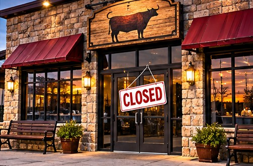

TEXAS NEWS STUDIO / NEWS
BUSINESS · NOVEMBER 7, 2026
MAJOR STEAKHOUSE FRANCHISEE IN BANKRUPTCY REPORT

TNS EDITORIAL NOTE: This is an original news brief and analysis of publicly discussed developments, not a claim of firsthand reporting. The image is a conceptual illustration, not documentary photography.
A reported franchisee bankruptcy puts restaurant debt and operating costs back in focus.
What a bankruptcy filing means
A franchise operator and the restaurant brand itself are not necessarily the same company. Financial trouble at one operator does not automatically mean every location is closing. Bankruptcy can involve restructuring, asset sales, lease negotiations, or closures, depending on the filing and court process.
The pressure on restaurants
Restaurants face a difficult combination of food costs, labor expenses, rent, insurance, and customers who are watching their spending. A busy dining room does not always translate into healthy profit margins.
What customers should check
Before assuming a favorite location is affected, verify the legal entity named in the filing, the specific restaurants it operates, and any confirmed closure announcements. Employees and gift-card holders may have practical questions that deserve precise, location-specific answers.
Tex's Take | TNS Commentary
My view: the most useful thing a news outlet can do is separate what is known from what is merely being predicted. Big headlines are easy. Following the documents, the numbers, and the consequences for ordinary people takes more work. And if every prediction of disaster came true, we'd all need a second calendar just to schedule the emergencies. We'll keep watching the facts, and we'll update the story when the evidence changes.